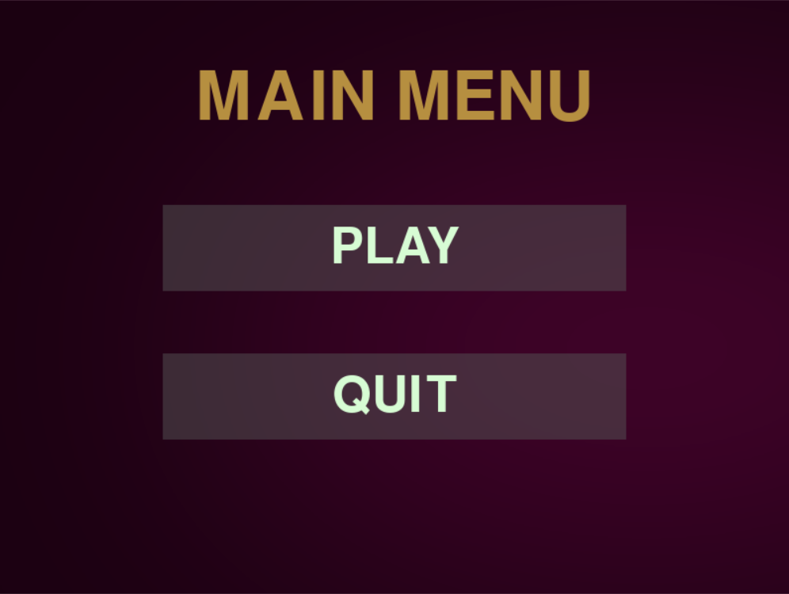
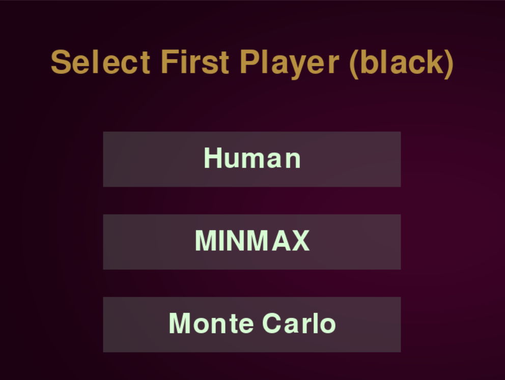
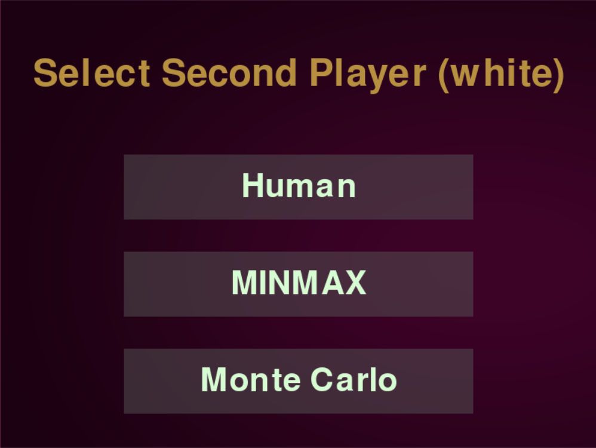
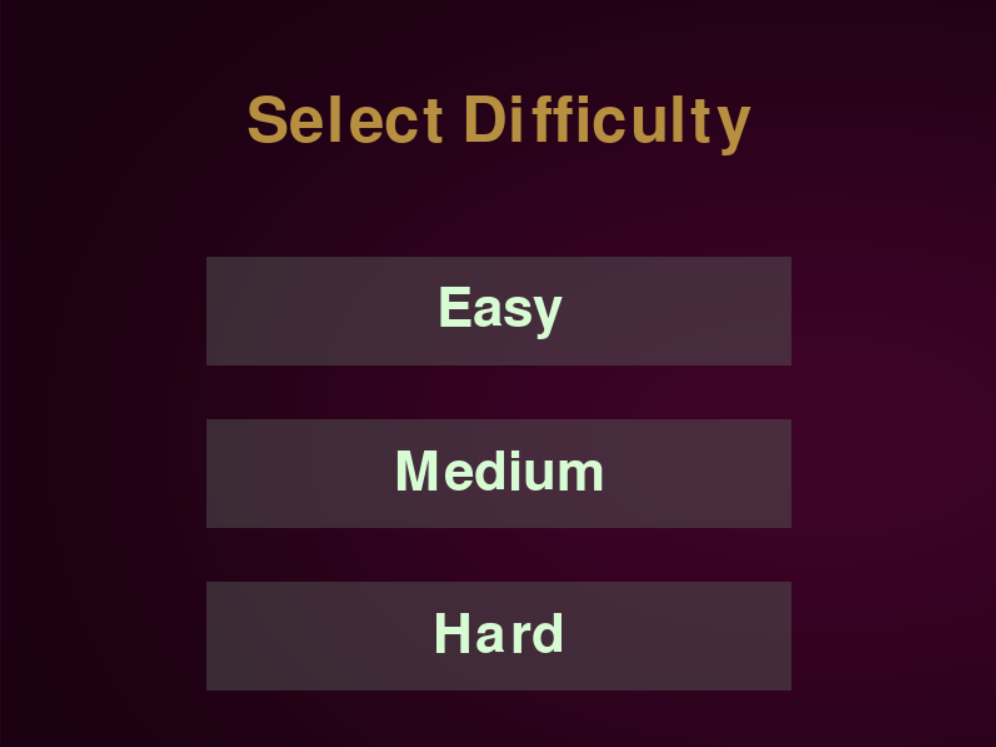

🎮 Othello AI
Welcome to the Othello AI project! This project implements an artificial intelligence agent to play the classic game of Othello (also known as Reversi) with a graphical user interface (GUI).
The AI supports multiple difficulty levels and algorithms including MinMax and Monte Carlo Tree Search (MCTS), allowing users to play against different levels of strategic intelligence.
🖥️ GUI Overview
1️⃣ Main Menu
This is the starting screen where you can choose to play the game or exit.

2️⃣ Player Algorithm Selection
Each player can choose their preferred algorithm for gameplay:


3️⃣ Difficulty Selection
Here you can specify the difficulty level for the chosen algorithm.

4️⃣ Game Screen
The main game board where players compete against each other using the AI.
(Additional screenshot or description can go here if available.)
🧠 Algorithms Implemented
🔸 MinMax Algorithm
- Explores all possible moves up to a certain depth.
- Uses a heuristic evaluation function to assign scores.
- Performs backtracking to find the optimal move.
- Supported with optional alpha-beta pruning for efficiency.
🔸 Monte Carlo Tree Search (MCTS)
- Simulates many random playouts to evaluate moves.
- Balances exploration and exploitation using UCB1.
- Performs selection, expansion, simulation, and backpropagation.
- Particularly powerful with time-limited decision making.
⚙️ Features
- Interactive GUI using Pygame.
- Support for human vs AI, AI vs AI, and human vs human games.
- Flexible algorithm and difficulty settings per player.
- Real-time board update and move highlighting.